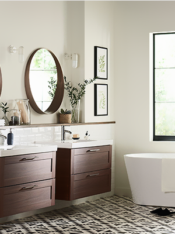

LIf you’re like many homeowners, you plan to keep the existing layout of your kitchen exactly the same but wish to renew and update its look. Cabinet refacing, also known in the industry as cabinet resurfacing, lets you keep your existing kitchen intact while completely transforming its appearance.

How can you have bathroom like it?
Kitchen cabinet refacing includes reinforcing your existing cabinet frames with a durable ¼” plywood, then a veneer of real wood or maintenance-free laminate is applied over the plywood. Expert craftsman perform precise measurements to ensure your new refaced cabinets boxes are seamless and color-matched to perfection with your new doors and drawer fronts. The transformation is finally completed with your choice of new hinges, knobs and/or pulls, and molding.
Learn how we work
Water during use can get on the walls and floor of the room, and hot humid air can lead to condensation of water on cold surfaces. Therefore, the construction of the bathroom is a difficult task. The ceiling, walls and floor should be covered with waterproof materials and easy to clean. Because of this, ceramic tiles, glass, and plastic panels are often used as finishing materials for their ease of cleaning. Thus, the design of the bathroom can be quite complicated and costly. The floor is often trimmed with ceramic tiles, but its surface is slippery and cold to the touch.
To eliminate these inconveniences, use waterproof mats, specially made for bathrooms. In the homes of better-off families can find heated floors.
Learn how we work
Water during use can get on the walls and floor of the room, and hot humid air can lead to condensation of water on cold surfaces. Therefore, the construction of the bathroom is a difficult task. The ceiling, walls and floor should be covered with waterproof materials and easy to clean. Because of this, ceramic tiles, glass, and plastic panels are often used as finishing materials for their ease of cleaning. Thus, the design of the bathroom can be quite complicated and costly. The floor is often trimmed with ceramic tiles, but its surface is slippery and cold to the touch.
To eliminate these inconveniences, use waterproof mats, specially made for bathrooms. In the homes of better-off families can find heated floors.